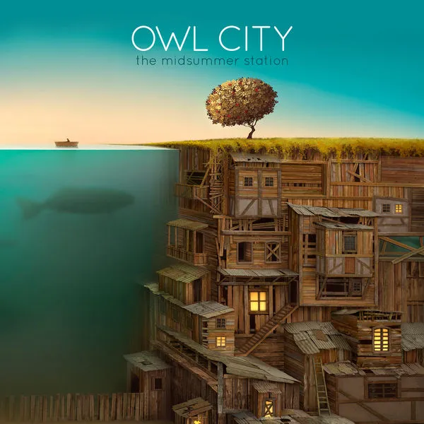
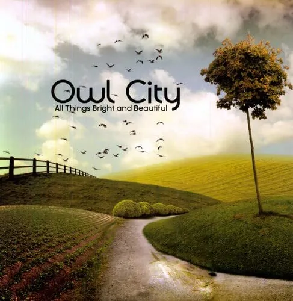
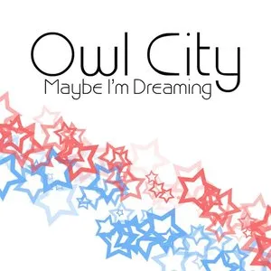
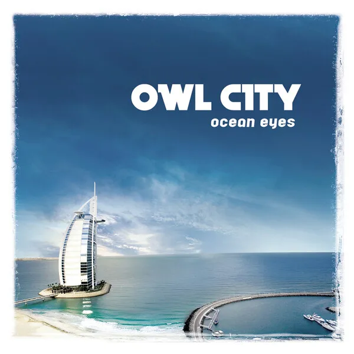
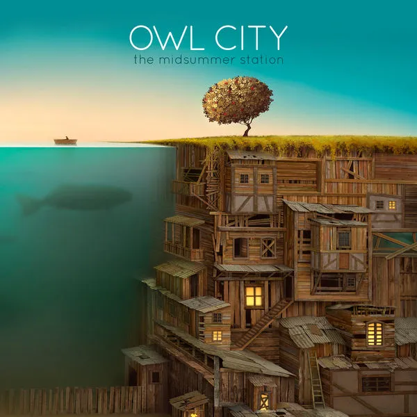
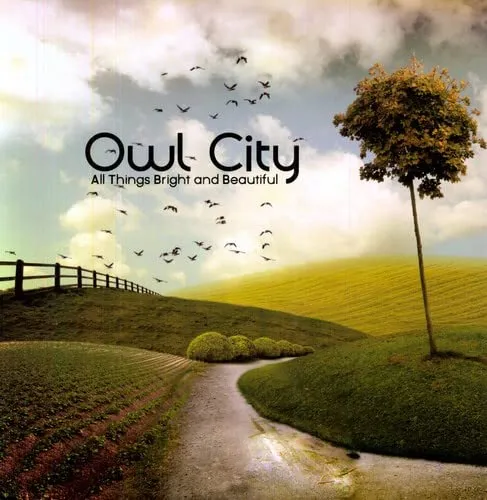
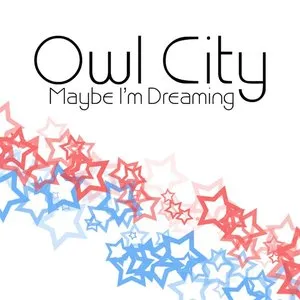
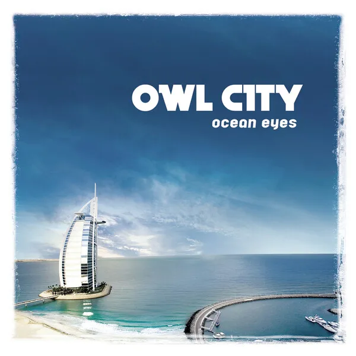

ADAM YOUNG
owl city
Biography
Since first breaking onto the alt-pop scene in 2007, Owl City has built a global following on the strength of his heart-on-sleeve songwriting and endlessly inventive sound. Along with earning a monumental hit with the diamond-certified “Fireflies”—a 2009 release that reached No. 1 in 26 countries—the Minnesota-bred artist otherwise known as Adam Young has made waves with smash singles like the double-platinum “Good Time” feat. Carly Rae Jepsen and brought his exuberant live set to sold-out shows around the world. With total album sales of over three million and single sales surpassing 20 million globally, Owl City has now delivered the highly anticipated album called Coco Moon: a wildly imaginative body of work revealing his deepened devotion to the strange magic of creativity. “The goal with this new music was to get back to how I felt when I wrote my first song alone in my bedroom when I was 18 years old,” Young says of Coco Moon, Owl City’s seventh full-length effort and the follow-up to his powerhouse 2018 album Cinematic. “It was this very pure, euphoric moment when I realized that I could immediately be transported into another world that I’d made myself. I had no agenda beyond creating that feeling—it’s why I got started making music, and it’s what I want to keep fighting to attain.” Raised in the small town of Owatonna, Young first began dreaming up Owl City’s emotionally charged form of electronic pop in his parents’ basement in his early 20s, and soon went viral with his sweetly surrealist hit single “Hello Seattle.” Not long after landing a record deal and making his major-label debut with 2009’s chart-topping, platinum-selling Ocean Eyes, he achieved meteoric success with the album’s lead single “Fireflies”—a heavy-hearted yet effervescent track channeling the kind of wide-eyed wonder that brightens our own outlook. “For me ‘Fireflies’ was just this random song that I really loved, but it ended up connecting with people in a massive way,” says Young. “It’s something I didn’t expect or even hope for, but it’s the coolest feeling to know that a song I made means that much to people.” Over the coming years, Owl City turned out widely beloved albums like 2012’s The Midsummer Station (featuring “Good Time” as well as collaborations with the likes of blink-182’s Mark Hoppus and hitmaking production duo Stargate) and Mobile Orchestra (a 2015 effort that found him joining forces with Aloe Blacc, Hanson, Jake Owen, and others). Naming legendary film-score composer John Williams among his longtime influences, Young has embraced a certain thoughtful grandeur in the making of Coco Moon. To that end, songs like “The Tornado” set their ultravivid storytelling against a majestic sonic backdrop, ultimately lending a larger-than-life quality to the most intimate expression. “‘The Tornado’ came from wanting to invent a story rather than write something autobiographical, and it turned into a story of a kid who’s delivering papers when a horrible storm starts up and forces him to take cover so he won’t get swept away,” explains Young. Partly inspired by the childlike poetry of Shel Silverstein, the string-accented track slowly unfolds as a life-affirming epic, encompassing an entire movie’s worth of thrilling drama in just four-and-a-half minutes. Meanwhile, on “Adam, Check Please,” Owl City shares a profoundly personal coming-of-age tale, amplifying its wistful mood with a bold assemblage of sonic details: ethereal textures, skittering beats, vocals layered to spellbinding effect. “On that song I wanted to pay respect to my first job, which was working at a grocery store in high school,” Young says. “I remember being overwhelmed but also so excited, and looking back now I see that it really taught me to stretch beyond my comfort zone.” In creating Coco Moon, Young has deliberately carved out his own quiet refuge from the chaos of the outside world. “I’ve been spending a lot of time reading and going for walks in nature, which helps me to stay focused on what’s important instead of getting caught up in the craziness of social media,” he notes. And with all of Owl City’s output, he hopes to provide his audience with a similar sense of solace and clarity. “After a hard day or week or even season of life, one of my favorite things is to put on my headphones and zone out on the music I love—it always feels like I’m escaping in a healthy way, and when I come back to reality I feel a little more equipped to deal with what’s difficult in life,” says Young. “Over the years I’ve had people tell me that my songs have done the same thing for them, and that’s really given me a sense of purpose. To me there’s no greater honor than to hear that my music might be a place people can go to feel uplifted, and to contrast the darkness of the world with something more hopeful and positive.”
Life's Work
Albums
 






